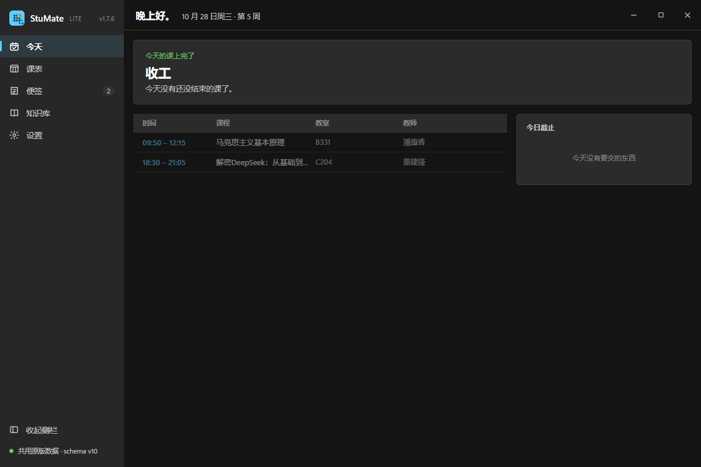
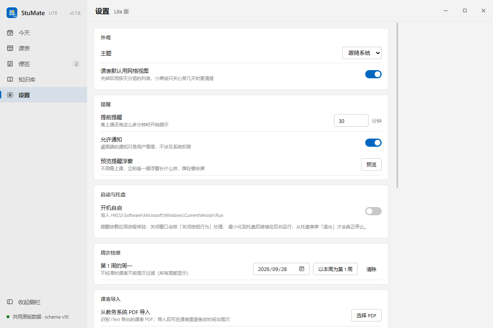
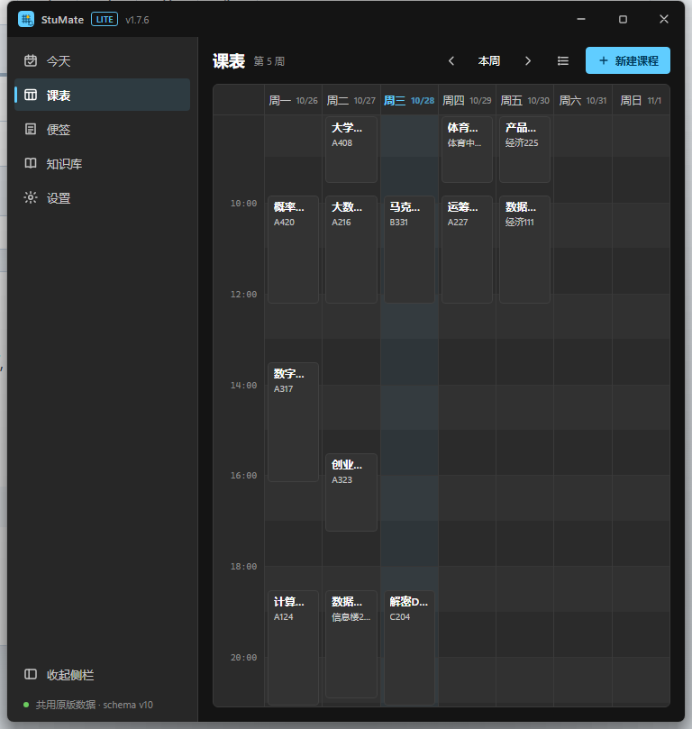

StuMate Lite v1.7.6 · 界面验收
Tauri 2 + React 重构版。以下截图取自 release 二进制本身（前端内嵌，走
tauri://localhost），不是浏览器预览，也不是设计稿。
数据源 原版同一个 SQLite
schema v10
课程 16
便签 2
知识条目 2
第 1 周 2026/09/28
窗口 1216×809
深色主题 跟随系统 / themeMode 2



浅色主题 themeMode 1



副屏（窄窗口）STUMATE_LITE_SCREEN=2 · 752×800 逻辑像素
